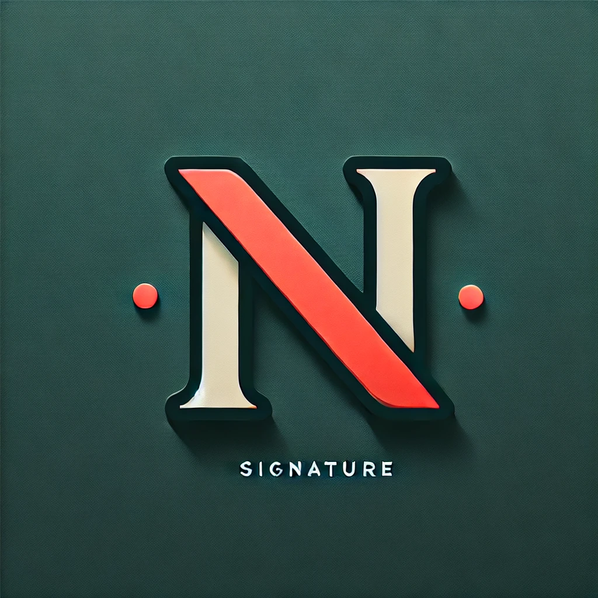

About me
Hello! I'm Rafael Narciso, a Computer Science Student based in Portugal. I like coding, Data Analysis, and hacking. I have a strong passion for technology and enjoy exploring new tools and frameworks.
My journey in computer science has allowed me to work on various projects, from web development to cybersecurity. I am always up to learn and take on new challenges.
In my free time, I enjoy to do some projects and participating in hackathons. I believe in the power of collaboration and community in the tech world.



Work Experience
SRS
May 2022
August 2022
I returned to Portugal at the time I was finishing high school. They were looking for students to do internships.
- Automation scripts: I was finishing the big project of AutomationScripts.
- Helpdesk Experience: I did some helpdesk tasks.
- System Administration tasks: I performed network/data activities like cleaning data from people who were no longer with the enterprise.
Widelabs
March 2022
May 2022
At this company, I mostly worked on small projects.
- Java projects: I worked on small app and Java challenges.
- Kali Linux experience: I performed some Kali Linux activities.